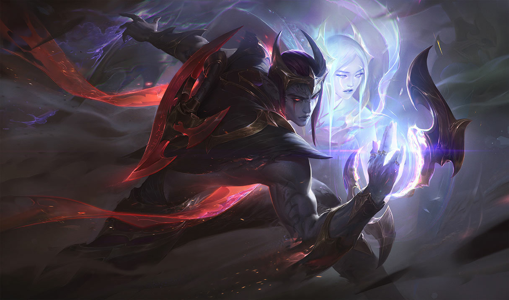

Aphelios

El tirador del juego que mas problemas esta causando
a riot games para poder balancear debido a las diversas armas
y combinaciones que pueden llegar a tener siendo sinceros este personaje
a pesar de tener el winrate mas bajo de los tiradores si que se distingue bien
de las personas que saben jugar este personaje que incluso puede llegar a ser
inmortal con las armas indicadas, tambien recordar que en su salida podia matar a una un
equipo entero con tan solo 1 una ultimate del infernum.
Habilidades de Aphelios

Ahora hablaremos de las armas de aphelios y sus respectivas habilidades que dentro de lo que cabe sera mas simple
de lo que parece.
Q=Aphelios tiene 5 habilidades activas diferentes, que dependen
de su arma principal: Calibrum (Rifle): disparo de largo alcance que marca
a su objetivo y permite un segundo ataque de gran alcance. Severum (Pistola Guadaña):
te desplazas rápidamente y atacas a los enemigos cercanos con ambas armas. Gravitum
(Cañón): inmovilizas a todos los enemigos que se encuentren ralentizados por esta arma.
Infernum (Lanzallamas): atacas en forma de cono y disparas con tu arma secundaria.
Crescendum (Chakram): despliegas una torreta que dispara con el arma secundaria de
Aphelios.
W=Cambio de Arma.
E=Sistema de armas en serie,
Aphelios no tiene una tercera habilidad. Este espacio muestra el siguiente
arma que obtendrá de Alune. Al principio, el orden de las armas es fijo,
pero puede cambiar en el curso de la partida. Cuando un arma se queda sin munición,
se va al último lugar.
R=Vigilia de Luz Lunar, Lanza una onda de luz lunar
concentrada que explota al impacto contra campeones enemigos. Aplica el efecto único
del arma principal de Aphelios.